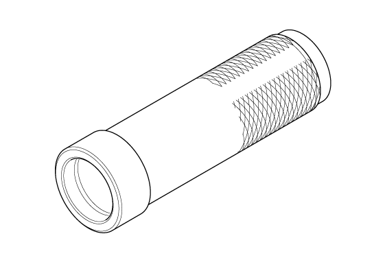
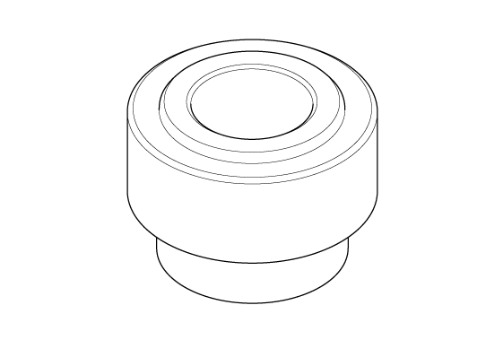
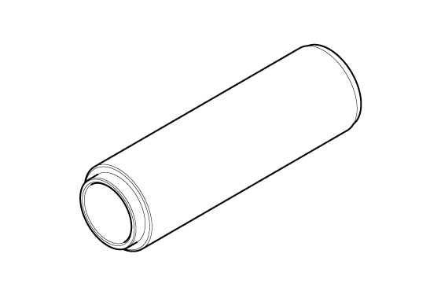

Countershaft Disassembly, Reassembly, and Inspection (K20C1 (M/T)) (2017 2018 2019 2020 2021): Notes
WARNING: This page is about a different variant/trim than selected.
Special Tools Required
| Image |
Description/Tool Number |
 Courtesy of HONDA, U.S.A., INC.
|
Driver Handle, 40 mm I.D. 07746-0030100 |
 Courtesy of HONDA, U.S.A., INC.
|
Bearing Driver Attachment, 30 mm I.D. 07746-0030300 |
 Courtesy of HONDA, U.S.A., INC.
|
Driver, 58 x 62 mm 070AD-PYZA100 |